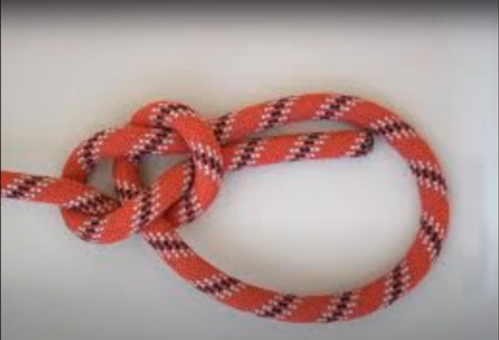

Bowline Knot - عقدة الخلبة
- Knots
- Pioneering
- Rescue
تُعتبر عقدة الخلبة الركيزة الأساسية في مهارات الحياة الخلوية، وتستحق بجدارة لقب "ملك العقد". بالنسبة للكشافة والمستكشفين والجوالة، هذه العقدة ليست مجرد حلقة؛ بل هي أداة إنقاذ حيوية وعنصر أساسي في مشاريع الريادة.
تتميز العقدة بأنها غير قابلة للانزلاق وغير قابلة للتعقيد. هذا يعني أن حجم الحلقة يظل ثابتاً ولا يضيق على الجسم المحيط به (مثل خصر شخص أثناء الإنقاذ). علاوة على ذلك، مهما زاد الحمل أو الوزن عليها، يمكن فكها بسهولة بكسر "طوق" العقدة. تُستخدم بكثرة في تثبيت حبال الشد في الرياح القوية، وفي نهاية حبال الجر، وكعقدة أمان أساسية عند التسلق أو النزول بالحبال.
طريقة الربط الفنية
- قسّم الحبل إلى طرف قصير (للربط) وطرف طويل (باقي الحبل).
- اصنع حلقة في الطرف الطويل من الحبل.
- مرر الطرف القصير داخل الحلقة من الأسفل إلى الأعلى.
- لف الطرف القصير خلف الطرف الطويل.
- أعد الطرف القصير ليدخل الحلقة مرة أخرى (نحو الأسفل).
- أمسك الطرف القصير مع الحلقة، واسحب الطرف الطويل لشد العقدة.
The Bowline is the cornerstone of outdoor skills, rightly earning the title "King of Knots." For Scouts, Explorers, and Rovers, this is not just a loop; it is a vital rescue tool and an essential component of pioneering projects.
The knot is distinct for being non-slip and non-jamming. This means the loop maintains its size and will not tighten around an object (like a person's waist during a rescue). Furthermore, no matter how much load or weight it bears, it can be easily untied by "breaking" the collar of the knot. It is extensively used for securing tow lines in high winds, at the end of tow lines, and as a primary safety knot for climbing or rappelling.
Technical Tying Method
- Divide the rope into a Short End (for tying) and a Long Part (the rest of the rope).
- Form a loop in the Long Part of the rope.
- Pass the Short End up through the loop.
- Pass the Short End behind the Long Part.
- Bring the Short End back down into the loop.
- Hold the Short End and the loop together, then pull the Long Part to tighten.

Technical Application
Uses & Applications / الاستخدامات
- Rescue: Won't crush the victim. (عمليات الإنقاذ)
- Sailing: Easy to untie when wet. (الإبحار والملاحة)
- Pioneering: Fixed anchor point. (الريادة والتثبيت)
- Climbing: Traditional safety knot. (التسلق)